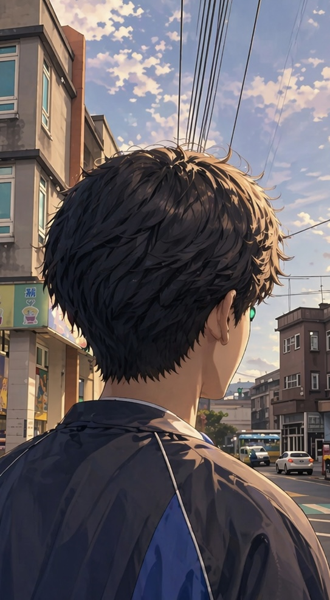
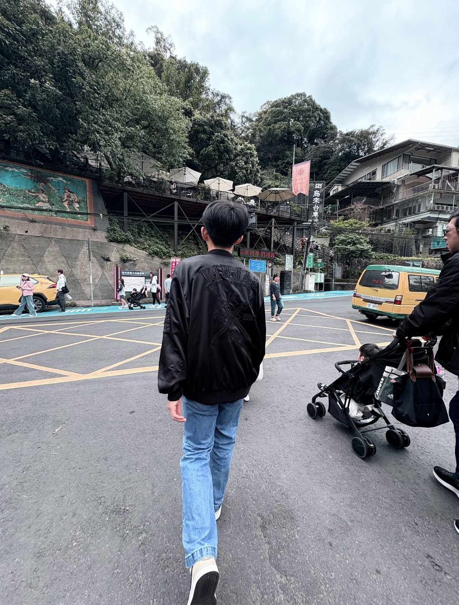
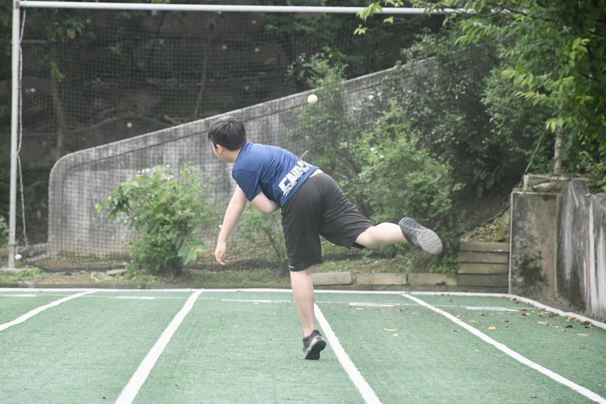
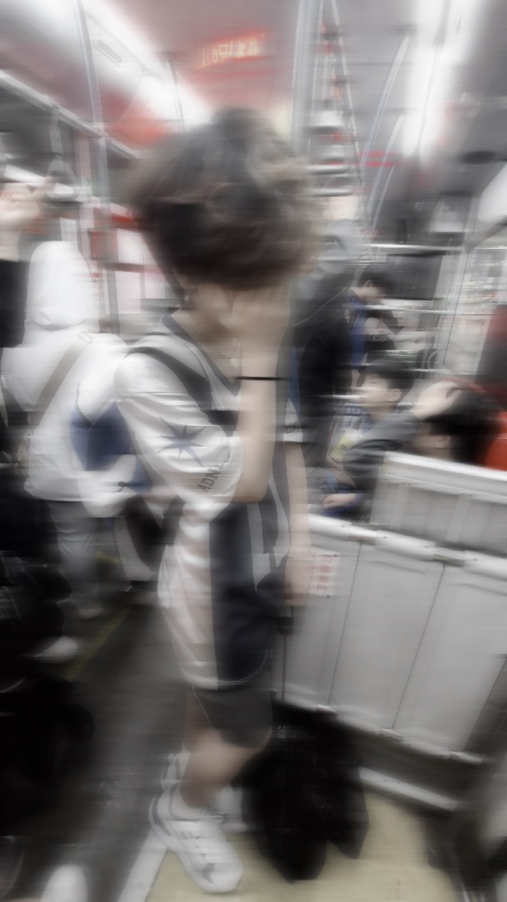
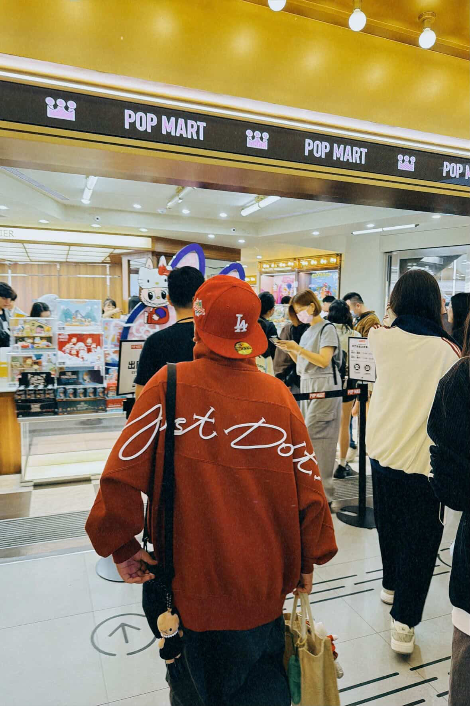
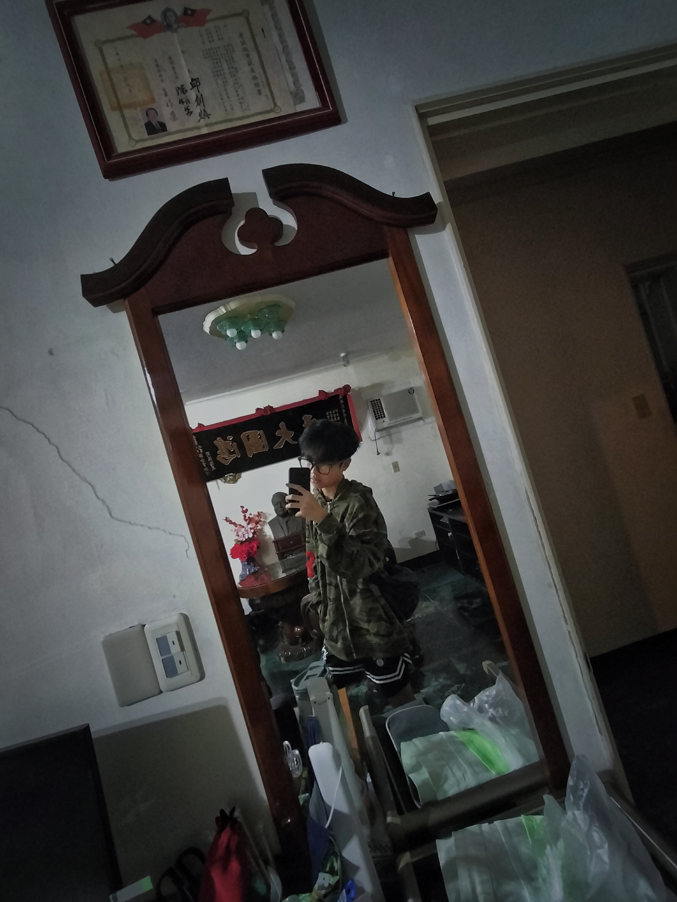
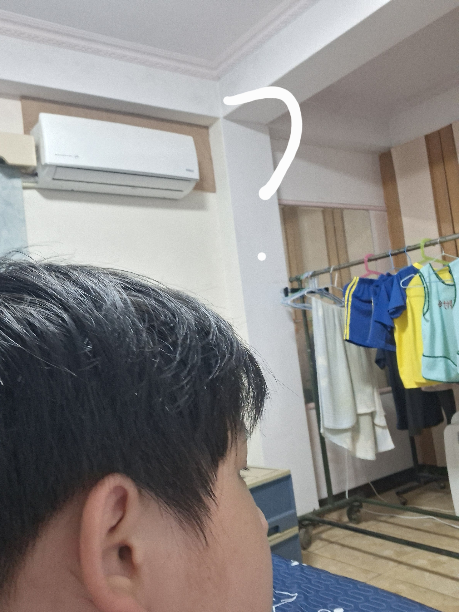
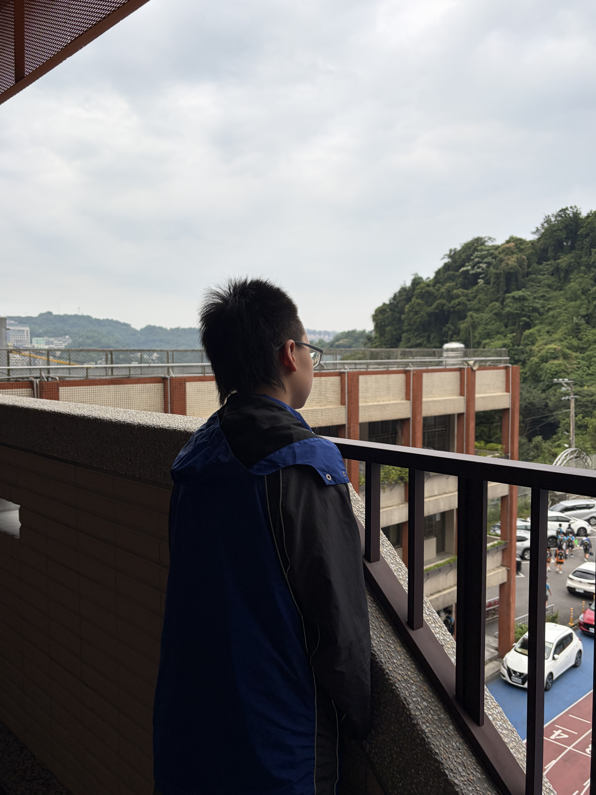
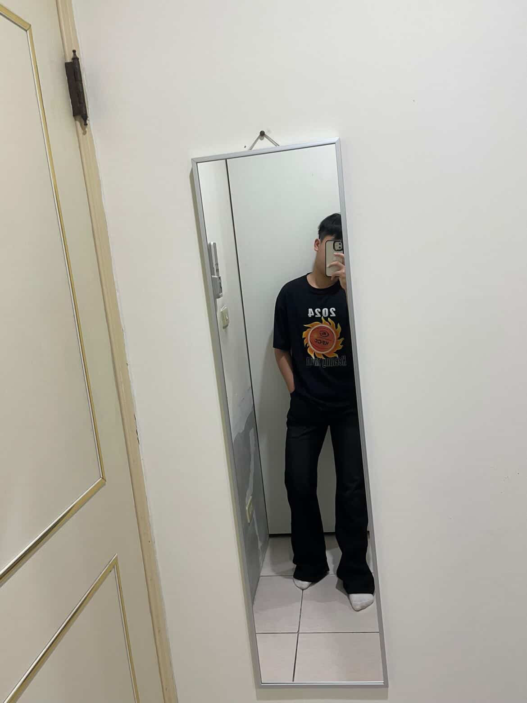
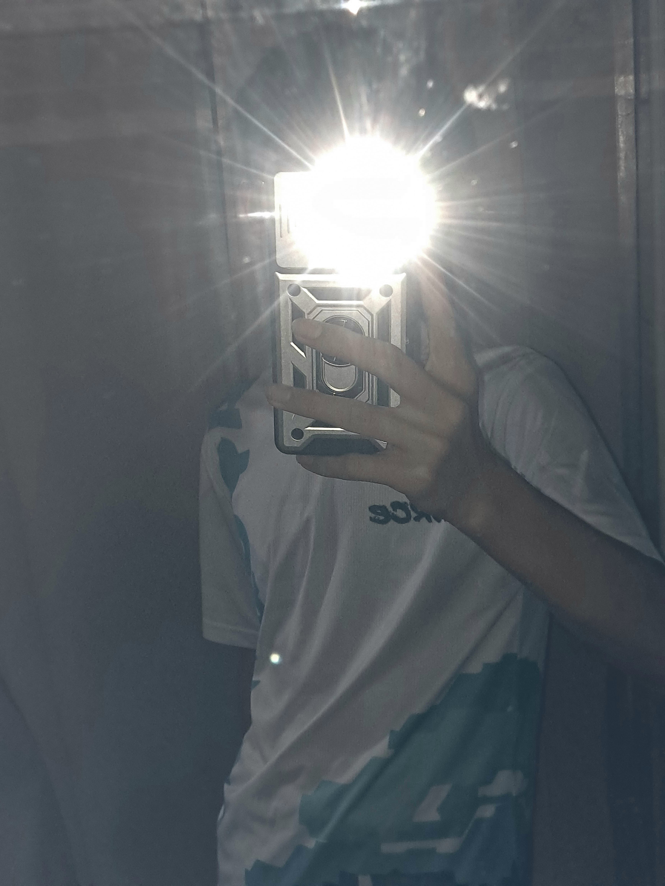

產品介紹(男)
- 1號:
哈根達斯
介紹:有點難懂，個性開朗，喜歡聊天、玩耍，有時喜歡一人獨處。就像冰淇淋一樣，剛認識時冷冰冰的像座冰山，但久了就會變的很熱情，話很多。 -

-
- 2號:口香糖
-
介 紹:個性幽默，專長是游泳，富有創意，勇於接受未知的挑戰。我就像口香糖一樣，嚼了一口後馬上嗆辣到打消在團隊中想要躺平的睡意，嚼了一口馬上就文思泉湧，嚼了一口為未來的我們持續拼志向屹立不搖。
-
- 3號:冰棒
介紹:個性愛笑，喜歡打羽球,愛唱歌，比較習慣自己完成一些事物，就像冰棒一樣吃完之後就只剩下一個木棒了，我對熟的人比較顯得像E人在陌生人面前顯的像I人，冰棒上的冰跟E的形狀一樣代表著團結，而木棒就是那個I一樣獨立。 -

4號:乖乖
介紹: 個性隨和，有時候是乖小孩，但其他時間就不好說了，喜歡運動。乖乖只有幾種口味，就像我的心情只有幾個在互換一樣 - ，情緒比較穩定，希望我能像乖乖這個零食一樣，一直活在大眾的視野也能一直幫忙大家。
-

- 5 號:關東煮
- 介 紹:如果是熟人的話，我會變得很幽默，就像便利商店裡的關東煮一樣，一開始看起來平平無奇，但其
- 實越熟越有味道，講話也會越來越有梗，常常讓身邊的人笑出來。

6 號:布布
介 紹:個性開朗，喜歡獨自完成任務，不完美但有趣，總能為生活增添一些樂趣。就像布布一樣，雖然時- 普通，但在一些時刻。總能為你我帶來全新的滋味，體驗不一樣的感覺。 面對陌生人時是I人，面對朋友是E人。
-

7 號:跳跳糖
介紹: 我的性格開朗幽默，就像跳跳糖一樣，隨時都能給大家帶來不一樣的體驗與驚喜，愛好是體育，最- 喜歡打籃球。

8 號:暖暖包
介紹: 我的興趣是打籃球，個性活潑開朗。我像暖暖包一樣，讓人隨時隨地都能感到溫暖，就像一個已經- 搓熱的暖暖包。

9 號:髒髒包
介紹： 性格有點憂鬱，我感覺我像髒髒包，外面看起來只是平常的樣子，但是心裡卻已經罵了無數個東西 。-

-
10號:泡麵
介紹: 我的性格熱心助人，會在他人最需要幫助時提供幫助，平時也是做事又快又有效率。讓人隨時隨地 - 的飽餐一頓。

11 號:茶葉蛋
介紹: 我就像茶葉蛋一樣跟我越熟就越聊得開，有時說不定會帶給你意想不到的趣事，且是就連平常都不- 苟言笑的人也會忍不住捧腹大笑。
- 12
號:跳跳糖
介紹: 性格活潑開心，會在班上帶給大家快樂的氣氛，就像跳跳糖一樣吃下去就可以感到快樂。

13 號:一番賞
介紹:個性幽默開朗，喜歡跟他人聊天還有玩耍，專長是游泳。跟我相處時就像抽獎ㄧ樣，每天都給你帶來不一樣的驚喜。 -
